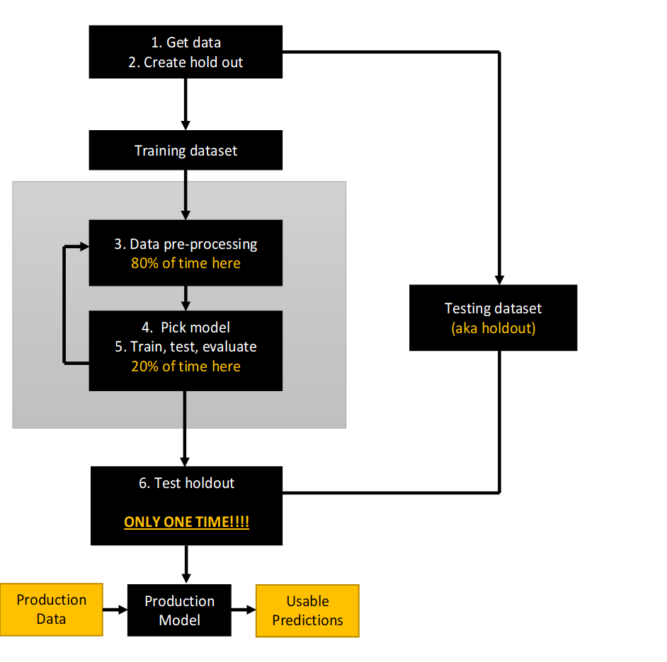
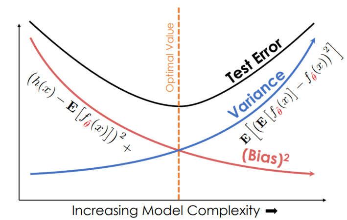
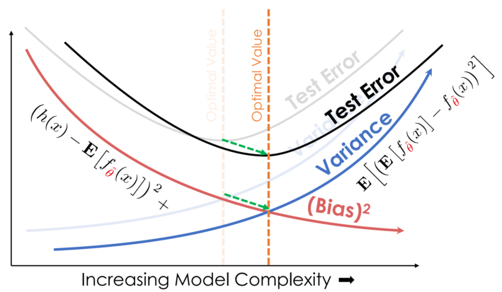
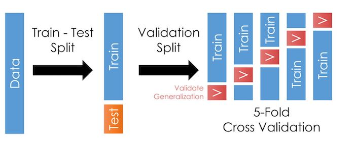

---
redirect_from:
  - "/04/04-introml"
interact_link: content/04/04_introML.ipynb
kernel_name: python3
kernel_path: content/04
has_widgets: false
title: |-
  Intro to ML
pagenum: 23
prev_page:
  url: /04/03_regression.html
next_page:
  url: 
suffix: .ipynb
search: model training data validation set sample models variance bias error html holdout org pythondatasciencehandbook test true positive learning style ds jakevdp github io false px into e feature variables text adding tr td fraction process src flowchart width ml selection should estimate its usually our too b engineering fit rate positives negative negatives machine png accuracy tradeoff align reduce might need cross cv split k work steps g risk noise wikipedia www textbook features dataset not reduces complexity problem table evaluation here step smaller repeat aka recall precision labels svg think index examples intro lets those tasks tend prediction detection

comment: "***PROGRAMMATICALLY GENERATED, DO NOT EDIT. SEE ORIGINAL FILES IN /content***"
---

    <main class="jupyter-page">
    <div id="page-info"><div id="page-title">Intro to ML</div>
</div>
    <div class="jb_cell">

<div class="cell border-box-sizing text_cell rendered"><div class="inner_cell">
<div class="text_cell_render border-box-sizing rendered_html">
<h1 id="Intro-to-Machine-Learning">Intro to Machine Learning<a class="anchor-link" href="#Intro-to-Machine-Learning"> </a></h1>
</div>
</div>
</div>
</div>

<div class="jb_cell">

<div class="cell border-box-sizing text_cell rendered"><div class="inner_cell">
<div class="text_cell_render border-box-sizing rendered_html">
<p>The general process is:</p>
<p></p>

</div>
</div>
</div>
</div>

<div class="jb_cell">

<div class="cell border-box-sizing text_cell rendered"><div class="inner_cell">
<div class="text_cell_render border-box-sizing rendered_html">
<p>Let's work backwards in discussing those steps.</p>
<h2 id="The-objective-of-machine-learning">The objective of machine learning<a class="anchor-link" href="#The-objective-of-machine-learning"> </a></h2><p>Basically, ML tasks tend to fall into sets of tasks:</p>
<ul>
<li>Prediction accuracy (e.g. of the label or the group detection) </li>
<li>Feature selection (which X variables and non-linearities should be in the model)</li>
</ul>
<p>And for both of those, the idea is that what the model learns will work <strong>out-of-sample</strong>. This focus on learning something that generalizes outside of the data we have is key to understanding most of the choices you make in a ML project.</p>
<p>Econometrically, the goal is to estimate a model on a sample (the data we have) that works on the population (all of the data that the process can and will generate).</p>
<h3 id="The-bias-variance-tradeoff">The bias-variance tradeoff<a class="anchor-link" href="#The-bias-variance-tradeoff"> </a></h3><p>It turns out we can decompose the expected error of <em>a model</em> like this:</p>
\begin{align}
E[\text{model error risk}] = \text{model bias}^2+\text{model variance}+\text{noise}
\end{align}<p>_(If you want to see the derviation of this, you can go to the <a href="https://en.wikipedia.org/wiki/Bias%E2%80%93variance_tradeoff">wiki page</a> or <a href="https://www.textbook.ds100.org/ch/15/bias_modeling.html">DS100</a>. The former's notation is a little simpler but the latter is more helpful with intuition)_</p>
<h4 id="&quot;Model-bias&quot;">"Model bias"<a class="anchor-link" href="#&quot;Model-bias&quot;"> </a></h4><ul>
<li><strong>Def: Is errors stemming from the model's assumptions in how it predicts the outcome variable</strong></li>
<li>It's the opposite of model accuracy</li>
<li>Adding more variables or polynomial transformations of existing variables will usually reduce bias </li>
<li>Removing features will usually increase bias</li>
<li>Adding more data to the training dataset can (but might not) reduce variance</li>
</ul>
<h4 id="&quot;Model-variance&quot;">"Model variance"<a class="anchor-link" href="#&quot;Model-variance&quot;"> </a></h4><ul>
<li><strong>Def: Is extent to which estimated model varies from sample to sample</strong></li>
<li>Adding more a new parameter (variables, etc) will usually increase model variance</li>
<li>Adding more data to the training dataset will reduces variance</li>
</ul>
<h4 id="Decreasing-Noise">Decreasing Noise<a class="anchor-link" href="#Decreasing-Noise"> </a></h4><ul>
<li>To reduce the noise term, you need more data, better data collection, and more accurate measurements</li>
</ul>
<h4 id="To-decrease-bias-and-variance,-however,-we-must-tune-the-complexity-of-our-models.">To decrease bias and variance, however, we must tune the complexity of our models.<a class="anchor-link" href="#To-decrease-bias-and-variance,-however,-we-must-tune-the-complexity-of-our-models."> </a></h4><p>&gt;</p>
<blockquote><p><strong>THE FUNDAMENTAL TRADEOFF: Increasing model complexity increases its variance but reduces its bias</strong></p>
<ul>
<li>Models that are too simple have high bias but low variance </li>
<li>Models that are too complex have the opposite problem</li>
<li>Collecting a TON of data can allow you to use complex models with less variance </li>
</ul>
<p>This is the essence of the bias-variance tradeoff, a fundamental issue that we face in choosing models for prediction."</p>
<p>_(This is adapted from <a href="https://www.textbook.ds100.org/ch/15/bias_modeling.html">DS100</a>)_</p>
<p>Visually, that is</p>
</blockquote>
<table> <tr> <td style="text-align:center"> <b> (A) The classic bias-variance tradeoff </b> </td> <td style="text-align:center"> <b> (B) Adding more data reduces variance <br> at each level of complexity </b> </td> </tr> <tr> </tr>
    <tr><td></td><td></td></tr></table><ul>
<li>Models that are too simple are said to be <strong>"underfit"</strong> and this is usually caused by bias</li>
<li>Models that are too complicated are said to be <strong>"overfit"</strong> and this is usually caused by variance</li>
</ul>

</div>
</div>
</div>
</div>

<div class="jb_cell">

<div class="cell border-box-sizing text_cell rendered"><div class="inner_cell">
<div class="text_cell_render border-box-sizing rendered_html">
<h3 id="Minimizing-model-risk">Minimizing model risk<a class="anchor-link" href="#Minimizing-model-risk"> </a></h3><p>Our tools to minimize model risk:</p>
<ol>
<li>More data</li>
<li>Feature engineering (adding, cleaning, and selecting features; dimensionality reduction). </li>
<li>Model selection</li>
<li>Model evaluation via cross validation (CV)</li>
</ol>
<p>You should absolutely <a href="https://jakevdp.github.io/PythonDataScienceHandbook/05.04-feature-engineering.html">read this</a> on feature engineering, and <a href="https://jakevdp.github.io/PythonDataScienceHandbook/05.03-hyperparameters-and-model-validation.html">this for model selection</a>.</p>
<p>Let's dig into CV here because it gets at the flow of testing a model:</p>

</div>
</div>
</div>
</div>

<div class="jb_cell">

<div class="cell border-box-sizing text_cell rendered"><div class="inner_cell">
<div class="text_cell_render border-box-sizing rendered_html">
<h2 id="Model-evaluation-via-cross-validation-(CV)">Model evaluation via cross validation (CV)<a class="anchor-link" href="#Model-evaluation-via-cross-validation-(CV)"> </a></h2><h3 id="Holdout-sample">Holdout sample<a class="anchor-link" href="#Holdout-sample"> </a></h3><p>So we need a way to estimate the test error. The way we do that is by creating a <strong>holdout sample</strong> (step #2 in the flowchart above) to test the model at the end of the process.</p>
<h4 id="YOU-CAN-ONLY-USE-THE-HOLDOUT-SAMPLE-ONCE!-If-you-use-it-during-the-iterative-training/evaluation-process,-it-stops-being-a-a-holdout-sample-and-effectively-becomes-part-of-the-training-set.">YOU CAN ONLY USE THE HOLDOUT SAMPLE ONCE! If you use it during the iterative training/evaluation process, it stops being a a holdout sample and effectively becomes part of the training set.<a class="anchor-link" href="#YOU-CAN-ONLY-USE-THE-HOLDOUT-SAMPLE-ONCE!-If-you-use-it-during-the-iterative-training/evaluation-process,-it-stops-being-a-a-holdout-sample-and-effectively-becomes-part-of-the-training-set."> </a></h4><p>Then, in the flowchart, we enter the grey box where all the ML magic happens, and pre-process the data (step #3).</p>
<h3 id="Training-sample">Training sample<a class="anchor-link" href="#Training-sample"> </a></h3><p>So, we have the holdout sample and the training sample.</p>
<p>If we fit the model on the training sample, and then examine its performance against the same sample, the error will be misleadingly low. (Duh! We fit the model on it!)</p>
<p>It would be nice to have an extra test set, wouldn't it? So, we split our training set again, into a <em><strong>smaller training set</strong></em> and a <em><strong>validation set</strong></em>.</p>
<ul>
<li>We estimate and fit our model on the training set</li>
<li>We estimate the error of our model on the validation set</li>
</ul>
<h3 id="Train-validate-holdout:-How-big-should-they-be?">Train-validate-holdout: How big should they be?<a class="anchor-link" href="#Train-validate-holdout:-How-big-should-they-be?"> </a></h3><p>Depends. Commonly, it's 70%-15%-15%.</p>
<h3 id="K-Fold-Cross-Validation">K-Fold Cross-Validation<a class="anchor-link" href="#K-Fold-Cross-Validation"> </a></h3><p>Problem: 70% and 15% might not be enough training data.</p>
<p>Solution: K-Fold Cross-Validation. Take the 85% of the sample that isn't the holdout and split it up into a training and validation set, fit the model, and test it. Then repeat that by dividing the data into a new training/validation split. And repeat this $k$ times.</p>
<p>Here, it looks like this:</p>
<p></p>
<h3 id="Summary-of-CV">Summary of CV<a class="anchor-link" href="#Summary-of-CV"> </a></h3><ol>
<li>Separate out part of the dataset as a "holdout" or "test" set. The rest of the data is the "training set".</li>
<li>Start steps #3-#5 of the flowchart. <ol>
<li>Split the "training set" up into a smaller "training" set and a "validation set".</li>
<li>Estimate the model on the smaller training set. The error of the model on this is the "training error".</li>
<li>Apply the model to the validation set to calculate the "validation error".</li>
<li>Repeat these "training-validation" steps $k$ times to get the average validation error.</li>
<li>The model that has the lowest average validation error is your model.</li>
</ol>
</li>
<li>Test the model against the holdout test sample and compute your final "test error". You are done, and forbidden from tweaking the model now. </li>
</ol>

</div>
</div>
</div>
</div>

<div class="jb_cell">

<div class="cell border-box-sizing text_cell rendered"><div class="inner_cell">
<div class="text_cell_render border-box-sizing rendered_html">
<h3 id="Evaluating-models">Evaluating models<a class="anchor-link" href="#Evaluating-models"> </a></h3><p>How do you measure accuracy of predictions or the model's fit? There are more, but the most common statistics to report are</p>
<table>
<thead><tr>
<th style="text-align:left">Measurement</th>
<th style="text-align:left">Measures</th>
</tr>
</thead>
<tbody>
<tr>
<td style="text-align:left">R2</td>
<td style="text-align:left"></td>
</tr>
<tr>
<td style="text-align:left">True Positive Rate (TPR) aka <strong>"Sensitivity"</strong> aka <strong>"Recall"</strong> = 1-FNR</td>
<td style="text-align:left"><em>What fraction of the true positives do you call positive?</em></td>
</tr>
<tr>
<td style="text-align:left">True Negative Rate (TNR) aka <strong>"Specificity"</strong> = 1-FPR</td>
<td style="text-align:left"><em>What fraction of the true negatives do you call negative?</em></td>
</tr>
<tr>
<td style="text-align:left"><strong>"Precision"</strong></td>
<td style="text-align:left"><em>How precise are your positive labels? <br> What fraction of what you labeled positive are truly positive?</em></td>
</tr>
<tr>
<td style="text-align:left"><strong>"Accuracy"</strong></td>
<td style="text-align:left"><em>What fraction of predictions made are correct?</em></td>
</tr>
<tr>
<td style="text-align:left">False Positive Rate (FPR) = 1-TNR</td>
<td style="text-align:left"><em>What fraction of the true negatives do you call positive?</em></td>
</tr>
<tr>
<td style="text-align:left">False Negative Rate (FNR) = 1-TPR</td>
<td style="text-align:left"><em>What fraction of the true positives do you call negative?</em></td>
</tr>
<tr>
<td style="text-align:left">F1</td>
<td style="text-align:left">Combines recall and precision</td>
</tr>
</tbody>
</table>
<p>If you're a visual person, the figures below might help. In the figure below, your classifier calls the objects in the circle positive, the left half are true positives, and the right half are true negatives.</p>
<table><tr><td></td><td></td></tr></table><h4 id="Which-measurement-should-you-use?">Which measurement should you use?<a class="anchor-link" href="#Which-measurement-should-you-use?"> </a></h4><p>It depends! You have to think about your problem:</p>
<ul>
<li>In medical testing, false negative is really bad, so tests tend to focus on minimizing false negatives at the expense of increasing false positives. </li>
<li>In the legal field, false positives (imprisoning an innocent person) are considered worse that false negatives.</li>
<li>Identifying terrorists? You might want to maximize the detection rate ("recall"). Of course, simply saying "everyone is a terrorist" is guaranteed to work! So you also should think about "precision" too. Maybe F1 is the metric for you. </li>
</ul>

</div>
</div>
</div>
</div>

<div class="jb_cell">

<div class="cell border-box-sizing text_cell rendered"><div class="inner_cell">
<div class="text_cell_render border-box-sizing rendered_html">
<h2 id="Model-selection">Model selection<a class="anchor-link" href="#Model-selection"> </a></h2><p>Step #4 of the flowchart. You need to pick the right model for your job. One way to pick amongst the possible options is to consider whether or not you need a supervised model.</p>
<h3 id="A-dichotomy-of-ML-models">A dichotomy of ML models<a class="anchor-link" href="#A-dichotomy-of-ML-models"> </a></h3><p><strong><em>Supervised learning models</em>,</strong> try to predict <em><strong>"labels"</strong></em> (you can think of these as $y$ values) based on training data that already has the $y$ variable in it ("labeled data"). E.g.,</p>
<ul>
<li>Regression: Predicting continuous labels </li>
<li>Classification: Predicting discrete categorical variables (two or more values)</li>
</ul>
<p><strong><em>Unsupervised learning models</em>,</strong> build structure on unlabeled data. E.g.,</p>
<ul>
<li>Clustering: Models that detect and identify distinct groups in the data</li>
<li>Dimensionality reduction: Models reduce the number of <em><strong>"features"</strong></em> (variables)</li>
</ul>
<p>The <a href="https://jakevdp.github.io/PythonDataScienceHandbook/05.01-what-is-machine-learning.html">PythonDataScienceHandbook</a> has a nice introductory list of example applications for ML techniques, and the <a href="https://scikit-learn.org/stable/auto_examples/index.html"><code>sklearn</code> example page</a> has a rather comprehensive set of examples with code!</p>

</div>
</div>
</div>
</div>

<div class="jb_cell">

<div class="cell border-box-sizing text_cell rendered"><div class="inner_cell">
<div class="text_cell_render border-box-sizing rendered_html">
<h2 id="Required-reading">Required reading<a class="anchor-link" href="#Required-reading"> </a></h2><ol>
<li><a href="https://jakevdp.github.io/PythonDataScienceHandbook/05.04-feature-engineering.html">This on feature engineering</a></li>
<li><a href="https://jakevdp.github.io/PythonDataScienceHandbook/05.03-hyperparameters-and-model-validation.html">This on model selection</a></li>
<li>Peruse/skim the <a href="https://jakevdp.github.io/PythonDataScienceHandbook/05.01-what-is-machine-learning.html">examples here</a> </li>
<li>Peruse/skim the <a href="https://scikit-learn.org/stable/auto_examples/index.html">examples on the sklearn site, which come with code</a></li>
</ol>

</div>
</div>
</div>
</div>

<div class="jb_cell">

<div class="cell border-box-sizing text_cell rendered"><div class="inner_cell">
<div class="text_cell_render border-box-sizing rendered_html">
<h2 id="Acknowledgments">Acknowledgments<a class="anchor-link" href="#Acknowledgments"> </a></h2><ul>
<li><a href="https://www.textbook.ds100.org/intro">DS100</a></li>
<li><a href="https://jakevdp.github.io/PythonDataScienceHandbook/index.html">PDSH</a></li>
</ul>

</div>
</div>
</div>
</div>

 


    </main>
    